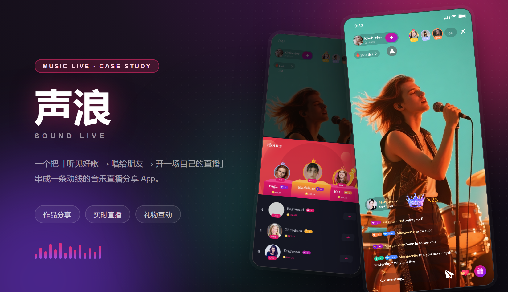
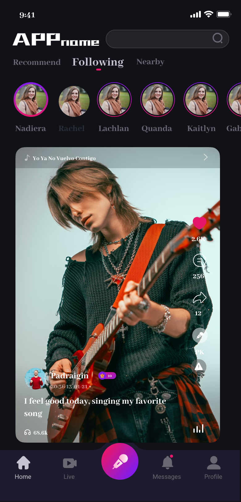
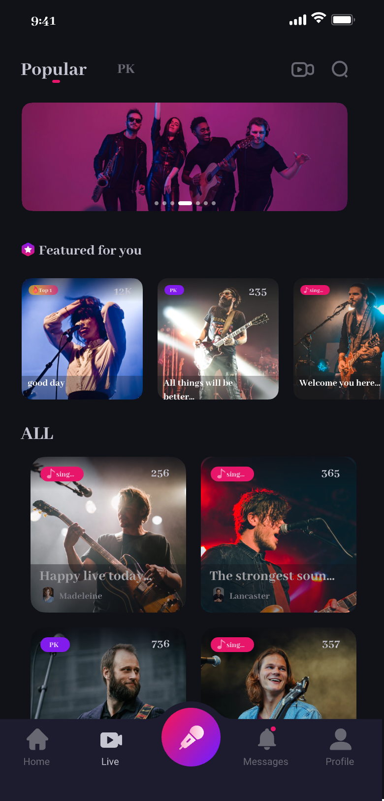
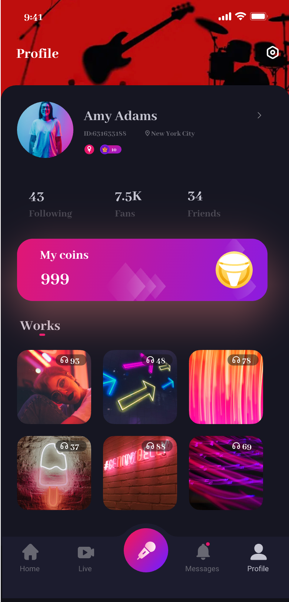

声浪 · 音乐直播分享 App
声浪是一款面向海外的音乐直播分享 App：用户既可以听别人唱，也可以自己录一段发出去，还能随时开一场自己的直播。这次交付的是全站界面——从首页的信息流、附近页的直播间，到直播间里的礼物与聊天、把人气量化成排名的热度榜，一屏一屏落定。视觉上让内容自己说话：暗色底把画面推到最前面，玫红只留给「正在发生」的直播与互动。
主视觉

项目背景
海外市场 · 音乐 + 直播 + 作品
声浪的旧版把「看直播」和「刷作品」做成了两条互不相干的流：用户在直播里听到一首好歌，想找这个人的其他作品，就得退回首页重新搜；歌手发了一条作品，也没有任何入口可以顺势开播。内容在跑，动线断在半路。
这次重做的目标很具体：把「听别人唱」「自己唱一首发出去」「开一场自己的直播」接成同一条路。所以设计从场景出发——首页负责发现，附近负责决定进谁的直播间，直播间负责留住人，热度榜负责给出留下来的理由。
设计策略
一条动线贯穿全站
- 首页信息流一屏两列，缩略图就是内容本身：歌名、人声量、作者、播放按钮各占一个固定位置，滑动时不跳动。
- 附近页把「谁在直播」做成全屏封面 + 右侧操作条（赞 / 评论 / 分享 / 更多），进直播间只需要一次点击。
- 直播间分三层：舞台层（画面）、互动层（观众席 / 礼物 / 聊天）、系统层（音量、举报、关闭），礼物只从底部上浮，永不遮挡主播。
- 热度榜把「名次、等级、金币」拆成三种视觉符号——数字、徽章、金色币值，只有前三名用渐变底座。
部分界面截图
全站 8 屏里的 5 屏 · 首页 / 直播间 / 热度榜 / 直播详情 / 个人中心
下面 5 屏只是整个 App 的一部分。实际交付还包含附近（直播间列表）、主播资料、唱歌发作品等页面，连同空态与加载态一起交付。
挑这 5 屏，是因为它们各自代表一种页面类型——信息流、沉浸式直播间、排行榜、半屏面板、个人主页。同一套暗色层级与组件在这 5 类页面上站得住，剩下的页面就都是复用。




视觉语言
深墨底 + 玫红霓虹，金色只给金币与等级
底色压到近黑（#0f0d13），让画面里的光成为唯一亮源；玫红 #ff2d74 只用于「正在直播」与互动按钮，紫色 #a855f7 承担礼物与等级，青色只做氛围补光。金色被严格限制在金币、皇冠与前三名，避免和霓虹抢注意力。标题用衬线体（Georgia 一类），和直播封面上的演出海报气质对齐；正文与数值回到无衬线。层级只用三档背景（#0f0d13 / #171320 / #211a2c）加一层玻璃浮层，字色四档封顶。
遇到的问题与解决
2 个直播场景类的权衡
问题直播间要全屏沉浸，但观众席、礼物、聊天、输入框全都要在同一屏，信息一多就把歌手挡住。
解决把直播间拆成舞台层 / 互动层 / 系统层三层：舞台层永远在最下且不被覆盖，互动层压缩在底部三分之一，礼物只从底部上浮并在 1.5 秒后消散，右上角统一收「人数、举报、关闭」。
问题暗色界面里层级一多就糊成一片，弹层、卡片、底部导航看起来在同一层。
解决定三档背景（#0f0d13 / #171320 / #211a2c）+ 一档玻璃浮层，字色四档封顶；弹层必须比底下一层更亮一档，并把这条写进组件注释，后续页面只按档位取色。
从设计到交付
3 步 · 定语言、铺页面、对双端
-
1 · 概念 · 定「舞台」语言
先定气质：把直播间当成一个舞台，画面是唯一主角。由此推出暗色底、全屏画面、底部浮层互动、衬线标题四条规则，再做首页与直播间两屏打样确认方向。
-
2 · 制作 · 按页面类型铺开
把页面归成五类（信息流 / 沉浸页 / 榜单 / 半屏面板 / 主页），每类先做一屏模板，再套到 8 屏全部页面上；图标、徽章、礼物与等级做成一套 2px 线性 + 彩色徽章的规范。
-
3 · 交付 · 组件、标注与走查
交付组件 Variant、页面清单与标注，和开发一起走查 iOS / Android 两端：暗色在 OLED 上的对比、礼物上浮是否会遮挡主播、长歌名与长聊天文案是否顶破卡片，逐项确认。
交付内容
这次做了什么